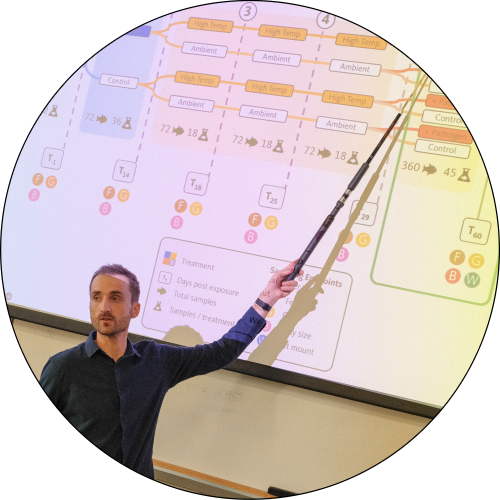
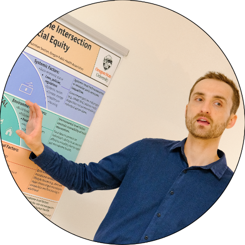
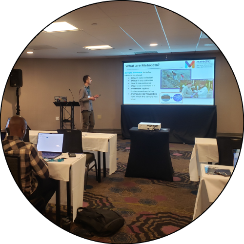

Publications#
Peer-Reviewed Publications#
In-prep Publications#
“Using fecal samples as a reliable proxy for bumblebee (Bombus terrestris) gut microbiota community analysis” (in-prep)
|
2026* |
“System-Agnostic Dynamical Microbiome Measures (SADMMs) for longitudinal multi-study and -system microbiome analysis” (in-prep)
|
2026* |
“Evaluating the effects of stressor history on zebrafish gut microbiome’s resistance and resiliency to parasite exposure” (in-prep)
|
2026* |
“Investigating the interaction of host genetics and parasite burden on the microbiome in zebrafish” (in-prep, draft available upon request)
|
2025* |
“Analyzing batch effect correction algorithms for small molecule data using ground truth from a designed experiment” (in-prep)
|
2025* |
Presentations#
{kind=link}

“Defining the context dependence of how the zebrafish gut microbiome responds to environmental stressors.” Invited Seminar, Department of Genetics and Evolution, University of Geneva.
|
2025 Geneva, Switzerland |
“Defining the context dependence of how the zebrafish gut microbiome responds to environmental stressors.” Invited Seminar, Institute of Molecular Biology, University of Oregon.
|
2025 Eugene, OR |
“Modelling the gut microbiome’s resistance and resilience to climate change and infection in zebrafish.” Connecting Microbiome Communities.
|
2024 San Diego, CA |
“Modelling the gut microbiome’s resistance and resilience to climate change and infection in zebrafish.” Beneficial Microbes Conference.
|
2024 Madison, WI |
“Choice of batch correction method is an important factor in small molecule study.” Metabolomics Association of North America.
|
2023 Columbia, MO |
“Effects of diet on growth and the microbiome.” Aquaculture.
|
2022 San Diego, CA |
“Zebrafish laboratory diets differentially alter gut microbiota composition.” 3rd Intl. Fish Microbiota Workshop, Chinese Academy of Agriculture Sciences.
|
2021 Beijing, China (remote) |
Conference Posters#
{kind=link}

“Ecological, Developmental, and Social Determinants of Microbial Transmission in the Semelparous Eusocial Bee Bombus terrestris.” Biology26 Conference, University of Neuchâtel.
|
2026 Neuchâtel, Switzerland |
“Modelling the Gut Microbiome’s Resistance and Resilience to Climate Change and Infection in Zebrafish.” College of Science Graduate Science Research Showcase, Oregon State University.
|
2025 Corvallis, OR |
“The human gut microbiome at the intersection of public health and social equity”. Oregon Public Health Association. Poster
|
2024 Corvallis, OR |
“How do external environmental factors impact the gut microbiome to influence host health?” ARCS Foundation. Poster
|
2022 Portland, OR |
“The Gut Microbiome Drives Benzo[a]pyrene’s Impact on Zebrafish Behavioral Development.” 2nd Intl. Fish Microbiota Workshop, University of Oregon.
|
2019 Eugene, OR |
“The Gut Microbiome Drives Benzo[a]pyrene’s Impact on Zebrafish Behavioral Development.” CAS Student Showcase, Oregon State University.
|
2019 Corvallis, OR |
Conference Panels#
“The Importance of Inclusive Practices in Microbiome Science.” Beneficial Microbes.
|
2024 Madison, WI |
Workshops#
{kind=link}

“Microbiome Data Analytics Boot Camp: Planning, generating, and analyzing 16S rRNA gene sequencing surveys” Columbia University (SHARP).
|
2025 Virtual (remote) |
“Microbiome Metadata Mastery and Research Training: Equipping the Next Generation of Researchers Across Academia, Government, and Industry” Connecting Microbiome Communities.
|
2024 San Diego, CA |
“NMDC: Metadata Standards and Submission Portal for Multi-Omic Analysis” Microbiology Department, Oregon State University.
|
2024 Corvallis, OR |
“ASM professional development series for Oregon microbiologists: Careers in academia vs. industry” American Society for Microbiology.
|
2024 Corvallis, OR |
Other#
Undergraduate Thesis#
“The Gut Microbiome Drives Benzo[a]pyrene’s Impact on Zebrafish Behavioral Development.” Oregon State University.
|
2020 |
Return to top.